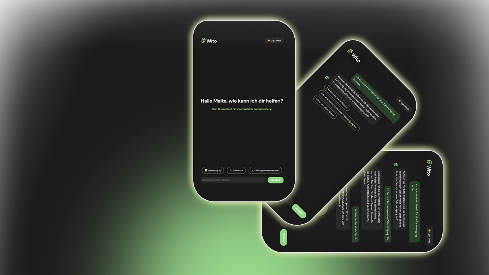
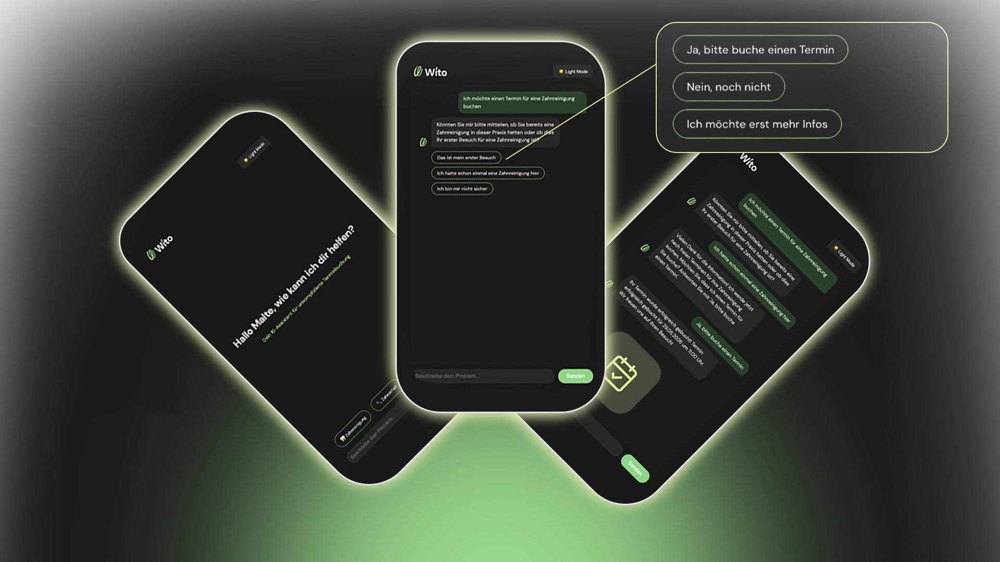
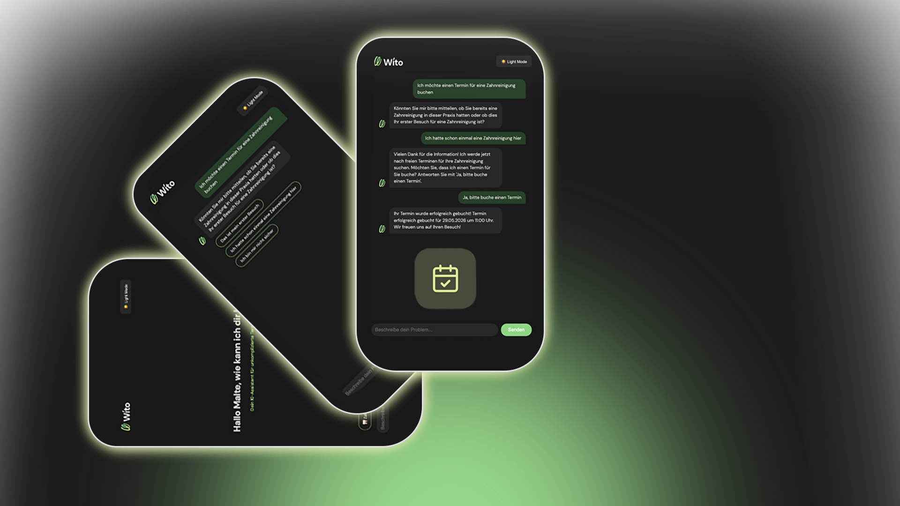

Triage-Chat
Patient beschreibt sein Problem im Chat – Wito leitet ihn zur richtigen Terminart weiter, ohne Wartezeit am Telefon.
Patienten buchen smarter. Praxen arbeiten effizienter.
DSGVO-konform · Made in Germany
Von der ersten Beschwerde bis zum bestätigten Termin – Wito begleitet Patienten und entlastet dein Team.
Patient beschreibt sein Problem im Chat – Wito leitet ihn zur richtigen Terminart weiter, ohne Wartezeit am Telefon.
Patient fotografiert seinen Mund – die KI bewertet die Dringlichkeit und schlägt den passenden Termintyp vor.
Terminbuchung direkt aus dem Chat – ohne Anruf, 24/7 verfügbar. Der Praxiskalender wird automatisch aktualisiert.
Wito wird per RAG mit dem Wissen Ihrer Praxis gefüttert – Leistungen, Behandler, Öffnungszeiten und FAQs. So beantwortet der Chatbot Patientenfragen präzise und bucht passende Termine, ohne dass Ihr Team eingreifen muss.



Mit Wito wird die Terminbuchung einfach – dein KI-Assistent startet sofort!
Schreib dein Anliegen oder wähl aus vorgeschlagenen Antworten – Wito versteht beides.
Nach 2–3 Fragen kennt Wito die Dringlichkeit und bucht den Termin direkt in den Kalender.